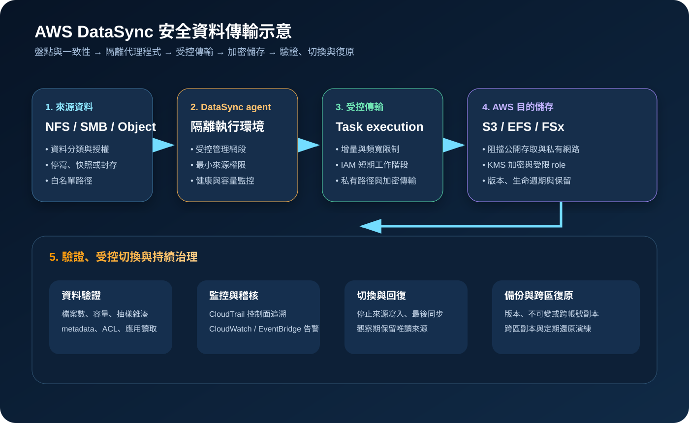

AWS DataSync：受控資料傳輸與驗證基礎
AWS DataSync 是受管線上資料傳輸服務，可在自建儲存、邊緣環境、其他雲端與 AWS 儲存服務之間搬移大量檔案或物件。它能自動化傳輸、排程、重試、監控與資料驗證，但不會自動完成應用相容性、資料分類、法遵核准、最終切換或災難復原設計。
作者：Dr. William｜查閱與發布：2026-11-22
服務定位
AWS DataSync 適合執行一次性遷移、週期性同步、歸檔匯入、資料湖匯入、跨儲存服務搬移與部分持續資料分發。常見來源或目的包含 NFS、SMB、HDFS、物件儲存、Amazon S3、Amazon EFS 與適用的 Amazon FSx 檔案系統；實際支援組合、區域與功能必須依官方文件核對。
DataSync 以「位置」描述來源與目的端，以「任務」定義兩端、選取規則、傳輸模式、驗證、頻寬、排程與記錄設定。連接自建或其他網路環境時，通常需要部署 DataSync agent；AWS 儲存服務彼此之間的部分傳輸可由服務直接執行。
它不是資料庫交易複寫工具、區塊層伺服器遷移工具、備份保留系統、同步衝突解決引擎，也不是離線大量資料搬運設備。若需要資料庫 CDC、伺服器重建、離線運輸或正式備份，應分別評估 AWS DMS、AWS Transform MGN、AWS Snow Family、AWS Backup 或服務原生能力。
核心概念
資料傳輸元件
- Location：來源或目的儲存端點及其存取設定。
- Task：把兩個位置與傳輸、驗證、排程及日誌規則組合成可執行工作。
- Agent：部署於來源附近的虛擬機器或適用環境，代表 DataSync 存取非 AWS 儲存。
- Task execution：單次任務執行，具有狀態、統計、錯誤與監控資料。
- Include／exclude filters：限制要搬移的路徑與物件，降低越界傳輸風險。
傳輸與驗證
- Basic mode：適合一般資料集，提供可配置的準備、傳輸與驗證流程。
- Enhanced mode：針對支援位置提供較高擴充性與簡化執行模式；支援範圍需依文件確認。
- Incremental transfer：重複執行時比較來源與目的，只傳輸需要更新的資料。
- Verification：依設定驗證傳輸內容或目的端資料；驗證範圍與成本需明確選擇。
- Bandwidth control：以固定上限或排程限制傳輸對既有網路的影響。
適合與不適合的使用情境
適合
- 把大型 NFS 或 SMB 檔案集遷移到 Amazon S3、EFS 或適用的 FSx 檔案系統。
- 以排程方式把分公司、研究設備或內容製作環境的資料集中到 AWS。
- 把 S3、EFS 或 FSx 之間的資料移動流程標準化，並需要統一監控、重試與驗證。
- 建立資料湖匯入管線，且可先完成資料分類、目的 bucket policy、KMS 與生命週期設計。
- 需要在切換前反覆執行增量傳輸，縮短最後一次停寫與同步窗口。
不適合或不能單獨完成
- 要求資料庫交易順序、低延遲 CDC 或應用雙寫一致性；這類需求應使用資料庫或串流複寫能力。
- 來源無法提供穩定網路頻寬，且資料量適合離線運輸，卻仍強迫使用線上傳輸。
- 把雙向同步當成自動衝突解決；兩端同時修改相同檔案時仍需明確權威來源與衝突政策。
- 來源應用持續寫入，卻沒有快照、停寫、檔案封存或最終同步程序來建立一致性點。
- 希望 DataSync 取代備份、版本保留、不可變副本、還原演練與跨區災難復原。
- 未確認檔案 metadata、ACL、擁有者、符號連結、大小寫、特殊字元與目的檔案系統語意差異。
示意故事案例：將影像檔案庫遷移到 Amazon S3
以下為示意案例，不代表特定企業或正式部署。 一家影像製作公司準備把自建 NFS 檔案庫移到 Amazon S3，供媒體處理與歸檔流程使用。團隊先盤點 420 TB 資料、每日新增量、檔案大小分布、目錄權限、未完成檔案、個人資料、版權資料與應用讀寫模式，並確認 S3 物件模型不等同於原有 POSIX 檔案系統。
DataSync agent 部署在來源附近的受控虛擬化環境，管理介面只允許指定管理網段，對外連線依官方網路需求縮限。目的 S3 bucket 關閉公開存取，以最小權限 IAM role 寫入指定 prefix，使用 KMS 金鑰加密；操作人員透過聯合身分、MFA 與短期工作階段管理。CloudTrail 記錄控制面操作，CloudWatch Logs 與指標集中監控任務。
團隊先以代表性目錄測試檔名、metadata、效能、驗證與應用讀取，再執行多輪增量傳輸。正式切換時停止來源寫入，完成最後一次同步與完整驗證，核對檔案數量、總容量、抽樣雜湊、權限映射與媒體處理結果。原始檔案庫在核准觀察期內維持唯讀與可還原狀態，S3 另建立版本、生命週期、跨區複寫或備份策略，不把 DataSync 任務本身視為復原機制。

建置與運作流程
- 盤點來源與目的儲存類型、區域、容量、檔案數、平均與最大檔案大小、每日變更量及 metadata。
- 分類資料敏感度、所有權、保留年限、資料落地區域與跨境限制，排除未核准資料。
- 確認來源與目的位置組合、區域、模式、配額、檔案系統語意及支援限制。
- 定義 RTO、RPO、允許停寫時間、網路窗口、驗證門檻、切換與回復條件。
- 依傳輸量與期限估算所需有效吞吐，完成 WAN、VPN、Direct Connect、DNS、防火牆與 MTU 測試。
- 連接自建儲存時，在來源附近部署 agent；依官方需求設定 CPU、記憶體、儲存、時間同步與網路。
- 限制 agent 管理面與網路規則，避免不必要的公開管理入口；只允許必要目的與連接埠。
- 使用聯合身分、MFA 與短期工作階段管理 DataSync；建立任務管理、執行、監看與核准角色。
- 為目的端建立專用 IAM role，限制到指定 bucket、prefix、檔案系統與 KMS 金鑰。
- 建立來源與目的 location，測試連線、掛載、DNS、TLS、權限與讀寫能力。
- 建立 task，選擇 Basic 或適用的 Enhanced mode，設定傳輸、覆寫、刪除、metadata 與驗證行為。
- 使用 include／exclude filter 明確限制資料範圍；先在測試位置驗證規則。
- 設定 CloudWatch Logs、EventBridge 或告警，監控失敗、跳過、驗證錯誤、耗時與吞吐。
- 以代表性資料執行試傳，核對內容、metadata、權限、應用行為與費用估算。
- 安排首次完整傳輸，必要時以頻寬限制避免影響正式系統。
- 重複執行增量傳輸，觀察變更率、剩餘時間、錯誤模式與來源負載。
- 切換前凍結未核准的路徑、權限與 Schema 類變更，確認目的端容量、加密、生命週期及備份。
- 停止來源寫入或建立一致性快照，執行最後一次同步與既定驗證。
- 完成檔案數、容量、抽樣雜湊、權限、應用讀取與業務結果對帳後才切換。
- 觀察期保留來源唯讀副本、操作紀錄與回復程序；異常時依門檻回復。
- 完成後停用不需要的 task、agent、臨時 IAM 權限與網路規則，避免閒置成本與攻擊面。
- 將目的資料納入 CloudTrail、CloudWatch、Config、KMS、版本、備份、跨帳號／跨區復原與定期還原演練。
成本、可用性與維運考量
DataSync 成本通常與傳輸或處理的資料量、任務模式及目的服務有關；另可能包含 S3 請求與儲存、EFS 或 FSx、KMS 請求、CloudWatch Logs、VPC endpoint、NAT Gateway、Direct Connect、跨區或跨雲資料傳輸等費用。重複執行完整驗證、頻繁掃描大量小檔案或搬移不必要資料，都可能增加時間與費用。
總工期受檔案數量、平均檔案大小、來源儲存效能、agent 容量、網路延遲、封包遺失、可用頻寬、目的服務配額與驗證方式影響。大量小檔案常比少量大檔案需要更多列舉與 metadata 處理，不能只用總 TB 數估算。
DataSync 是受管傳輸服務，但端到端可用性仍取決於來源儲存、agent、虛擬化平台、網路、DNS、目的儲存與 KMS。單一 agent 或單一路徑故障可能中斷傳輸；正式遷移應建立重試、替代 agent、網路備援、分批策略與足夠切換緩衝。跨區復原需由目的儲存的複寫、備份或其他機制完成。
AWS DataSync 特有資安風險與控制
- 任務角色可存取過多資料：將 IAM role 限制到指定 bucket、prefix、檔案系統與必要操作，分離來源讀取與目的寫入權限。
- 操作人員使用長期憑證：使用聯合身分、MFA 與短期工作階段；不得把任何憑證、金鑰、權杖、密碼或 cookie 寫入任務、程式、頁面或日誌。
- agent 管理面暴露：把 agent 部署在受控網段，限制管理來源、虛擬化權限與主機存取，並依官方需求只開放必要連線。
- 假冒或未授權 agent：保護啟用流程與主機控制權，記錄 agent 建立、啟用、更新與刪除事件，停用不再使用的 agent。
- 來源位置權限過大：NFS export、SMB share、物件儲存或 HDFS 帳號只授予指定資料集的必要讀取權限。
- 目的端公開存取：S3 啟用 Block Public Access 並限制 bucket policy；EFS、FSx 與其他檔案系統放在私有網路，安全群組只允許必要來源。
- 未核准資料被大量外傳：先完成資料分類與法遵核准，使用 include filter 與目的 prefix 白名單，對異常傳輸量與新位置建立告警。
- 傳輸範圍設定錯誤：include／exclude 規則必須版本化、雙人審查並以測試任務驗證，避免萬用路徑搬走整個 share。
- 覆寫或刪除造成資料破壞：明確審查 overwrite、preserve deleted files 與目的端保留設定；高風險任務先使用隔離目的位置。
- 兩端同時修改造成衝突：指定權威來源，切換前停止寫入或建立一致性快照；不要假設雙向任務能自動解決衝突。
- metadata 與 ACL 映射錯誤：測試擁有者、群組、時間、權限、ACL、符號連結與特殊檔名，對目的端語意差異建立補償控制。
- KMS 權限配置錯誤：限制 key policy 與 grant，驗證 DataSync role 可在需要時使用金鑰；避免停用或刪除仍在使用的金鑰。
- 網路路徑未隔離：使用受控路由、VPN、Direct Connect、VPC endpoint 或其他適用私有連線，避免把來源儲存直接暴露於網際網路。
- 機密資料出現在記錄：限制 CloudWatch Logs 存取與保留，避免以檔名、路徑或錯誤訊息暴露敏感內容；匯出前執行敏感資料檢查。
- 控制面操作無法追溯：以組織層級 CloudTrail 集中記錄 DataSync、IAM、KMS、S3、EFS、FSx、EC2 與網路變更。
- 任務失敗未被發現：以 CloudWatch、EventBridge 或通知監控任務失敗、驗證錯誤、跳過檔案、異常耗時與吞吐下降。
- 驗證範圍不足：依風險選擇傳輸中或完整資料集驗證，另執行檔案數、容量、抽樣雜湊、應用讀取與業務對帳。
- DataSync 被誤當備份：目的端另建版本、不可變或跨帳號備份、跨區副本與定期還原演練。
- 臨時資源長期留存：任務完成後撤銷臨時權限、刪除不用位置與 agent、關閉網路規則並保留必要稽核證據。
共同責任邊界
AWS 負責 DataSync 受管服務與其底層雲端基礎設施，提供任務調度、資料傳輸、驗證、加密傳輸及與 IAM、KMS、CloudTrail、CloudWatch 等服務整合的能力。
客戶負責資料分類與授權、來源及目的儲存安全、agent 主機與虛擬化環境、IAM 最小權限、MFA 與短期憑證、網路隔離、公開存取、KMS 金鑰政策、Secrets Manager／Parameter Store 中其他整合機密、任務範圍、metadata 與應用相容性、CloudTrail／CloudWatch、切換與回復、備份及跨區復原。任務成功不代表資料、權限、應用與復原能力已完成驗收。
上線與維運可執行檢查清單
- □ 來源、目的、區域、容量、檔案數、大小分布、變更率與 metadata 清冊完整。
- □ 資料敏感度、所有權、保留、資料落地與跨境資格已核准。
- □ 位置組合、區域、任務模式、配額與檔案系統限制已依官方文件核對。
- □ RTO、RPO、停寫窗口、驗證門檻、切換與回復條件已核准。
- □ 應用一致性方法已確立，來源可停寫、快照或封存未完成檔案。
- □ 操作人員使用聯合身分、MFA 與短期工作階段，無長期憑證散落。
- □ DataSync 管理、任務執行、唯讀監看與切換核准角色已分離。
- □ 來源與目的 IAM role、share 帳號及檔案系統權限符合最小權限。
- □ S3 Block Public Access、bucket policy、EFS／FSx 私有網路與安全群組已驗證。
- □ KMS key policy、grant、輪替、停用風險與 DataSync 使用權限已測試。
- □ agent 位於受控環境，主機、管理面、虛擬化與網路存取均受限制。
- □ DNS、防火牆、VPN／Direct Connect、VPC endpoint、頻寬與故障路徑已測試。
- □ include／exclude filter 採白名單思維，已版本化、雙人審查與測試。
- □ overwrite、刪除保留、metadata、ACL、符號連結與特殊檔名行為已確認。
- □ 代表性試傳已驗證檔案內容、權限、應用讀取、效能與費用。
- □ CloudTrail 已集中記錄 DataSync、IAM、KMS、儲存與網路控制面操作。
- □ CloudWatch／EventBridge 已告警任務失敗、驗證錯誤、跳過與異常吞吐。
- □ 正式傳輸期間來源負載、agent、WAN、目的配額與 KMS 狀態均受監控。
- □ 最後同步前已停止來源寫入或建立一致性點。
- □ DataSync 驗證與獨立檔案數、容量、抽樣雜湊及業務對帳皆通過。
- □ 正式切換後保留可用的來源唯讀副本與核准回復窗口。
- □ 目的端版本、生命週期、備份、跨帳號／跨區副本與還原演練已建立。
- □ 完成後已撤銷臨時權限、停用閒置 agent／task 並清理網路規則。
AWS 官方一手來源
- What is AWS DataSync?（查閱：2026-11-22）
- How AWS DataSync works（查閱：2026-11-22）
- Working with AWS DataSync locations（查閱：2026-11-22）
- Working with AWS DataSync agents（查閱：2026-11-22）
- Working with AWS DataSync tasks（查閱：2026-11-22）
- Choosing a task mode（查閱：2026-11-22）
- Managing how AWS DataSync handles files, objects, and metadata（查閱：2026-11-22）
- Filtering data transferred by AWS DataSync（查閱：2026-11-22）
- Configuring bandwidth for AWS DataSync transfers（查閱：2026-11-22）
- Verifying data integrity during a transfer（查閱：2026-11-22）
- Security in AWS DataSync（查閱：2026-11-22）
- Identity-based policy examples for AWS DataSync（查閱：2026-11-22）
- Network requirements for AWS DataSync（查閱：2026-11-22）
- Monitoring AWS DataSync（查閱：2026-11-22）
- AWS DataSync Pricing（查閱：2026-11-22）
- AWS Shared Responsibility Model（查閱：2026-11-22）
內容說明
本文依 2026-11-22 可查閱的 AWS 官方文件整理。DataSync 支援的位置、區域、任務模式、配額、metadata 行為、網路需求與定價可能更新；正式導入前應依目標區域最新文件、代表性資料試傳、資安審查、費用估算、切換演練與可還原備份為準。